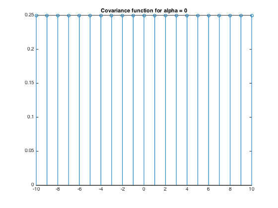
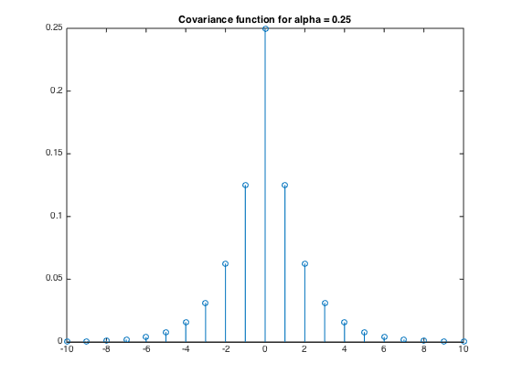
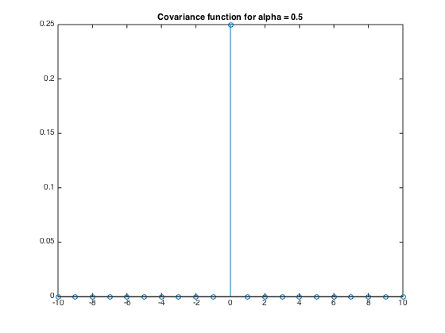
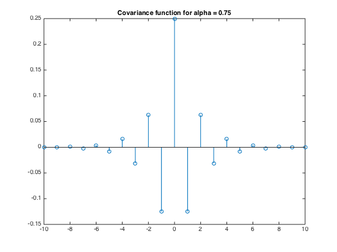

alpha = [0, 0.25 0.5 0.75]; m = -10:1:10; for i = 1:length(alpha) CovFunc(i, :) = 1/4*(1-2*alpha(i)).^(abs(m)); end figure; stem(-10:1:10,CovFunc(1,:)); title('Covariance function for alpha = 0'); figure; stem(-10:1:10,CovFunc(2,:)); title('Covariance function for alpha = 0.25'); figure; stem(-10:1:10,CovFunc(3,:)); title('Covariance function for alpha = 0.5'); figure; stem(-10:1:10,CovFunc(4,:)); title('Covariance function for alpha = 0.75'); % The plots agree with what we expect of this system. When alpha is 0 this % means that there is no transition probablility and therefore knowing the % first value, gives you complete information about all future and past % values. % When the alpha is 0.25 we start seeing a covariance function that we % typically expect. One where the covariance of two times decreases as time % goes on. % When the alpha is 0.5 the system is as random as it can be. Therefore we % gain no information about future or past values. This is reflected by % only seeing a spike at m=0 and the rest of the values being 0. % When alpha is 0.75, the system acts differently. Because the transition % probability is so high, you are very likely to switch states during a % time step. This corresponds to flipping signs of the covariance function % at every time step. Which is what we see.   